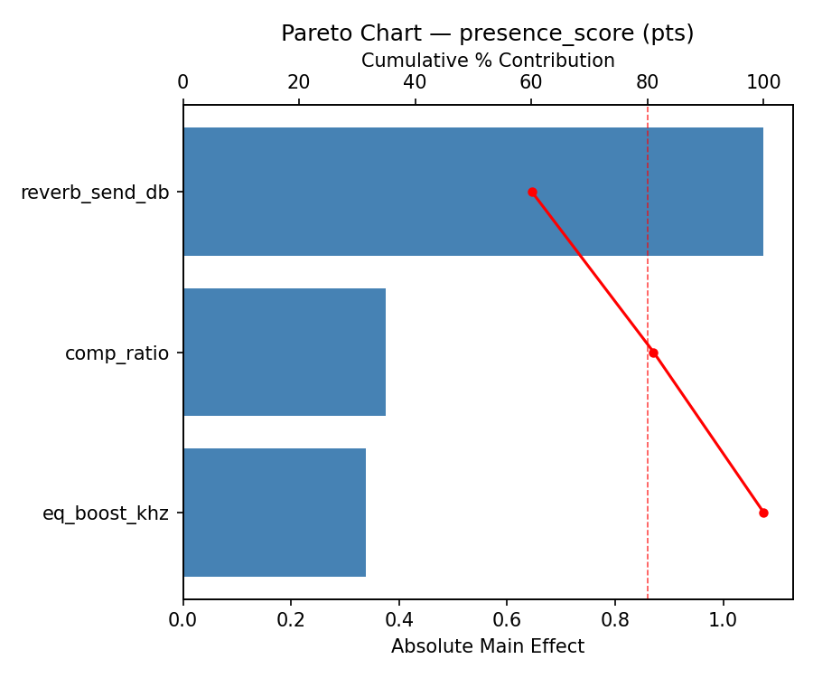
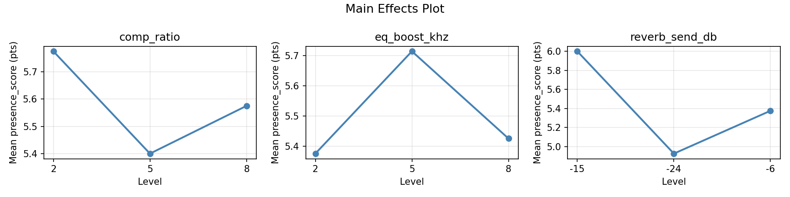
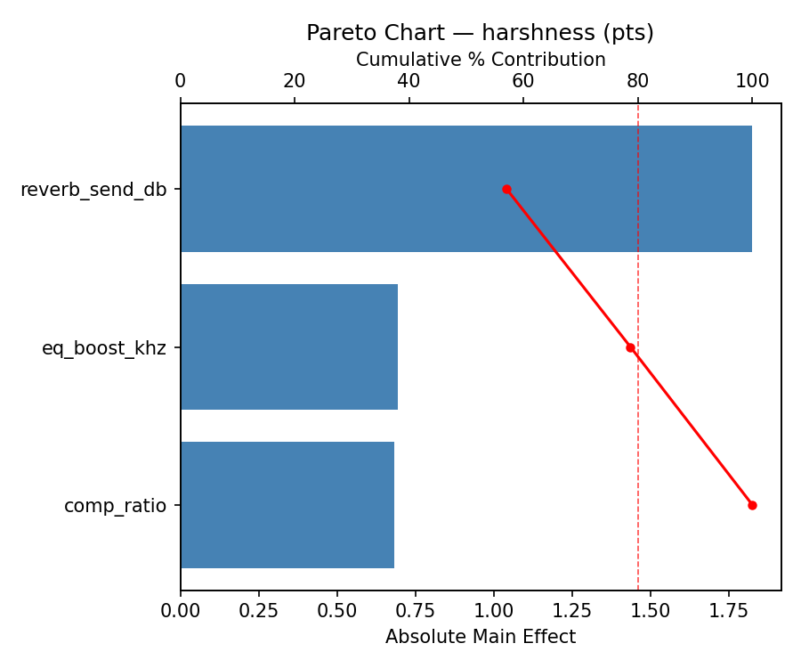
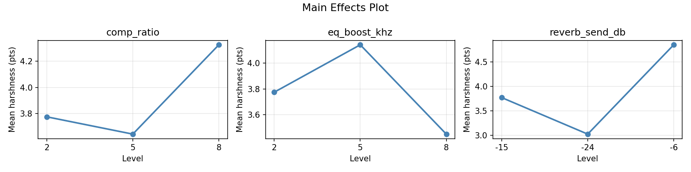
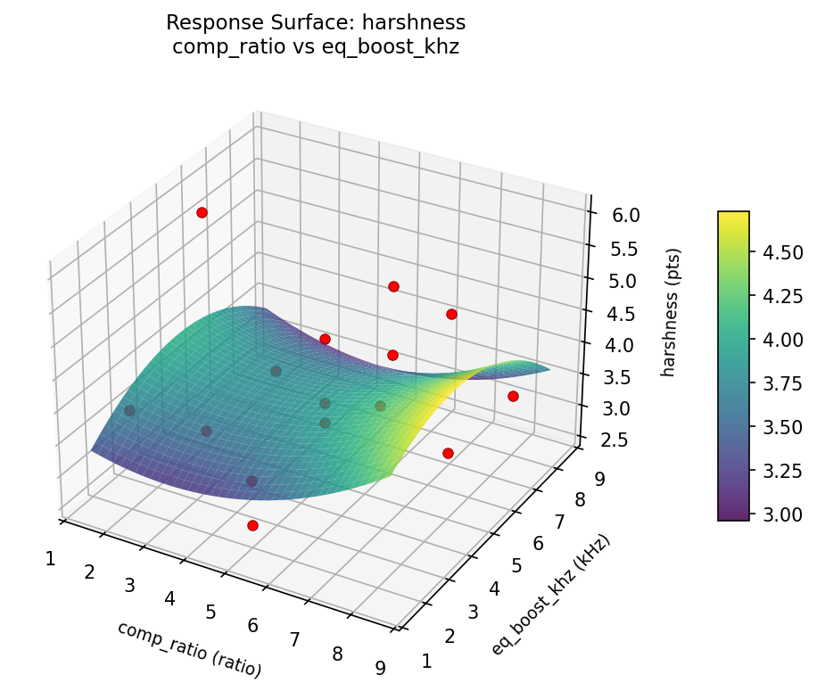
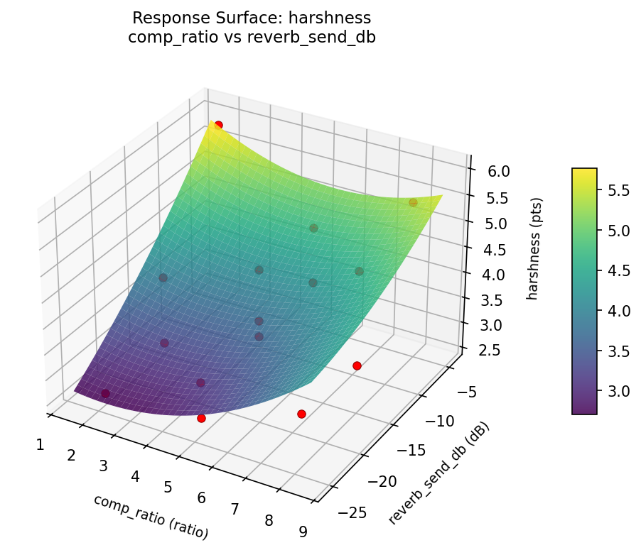
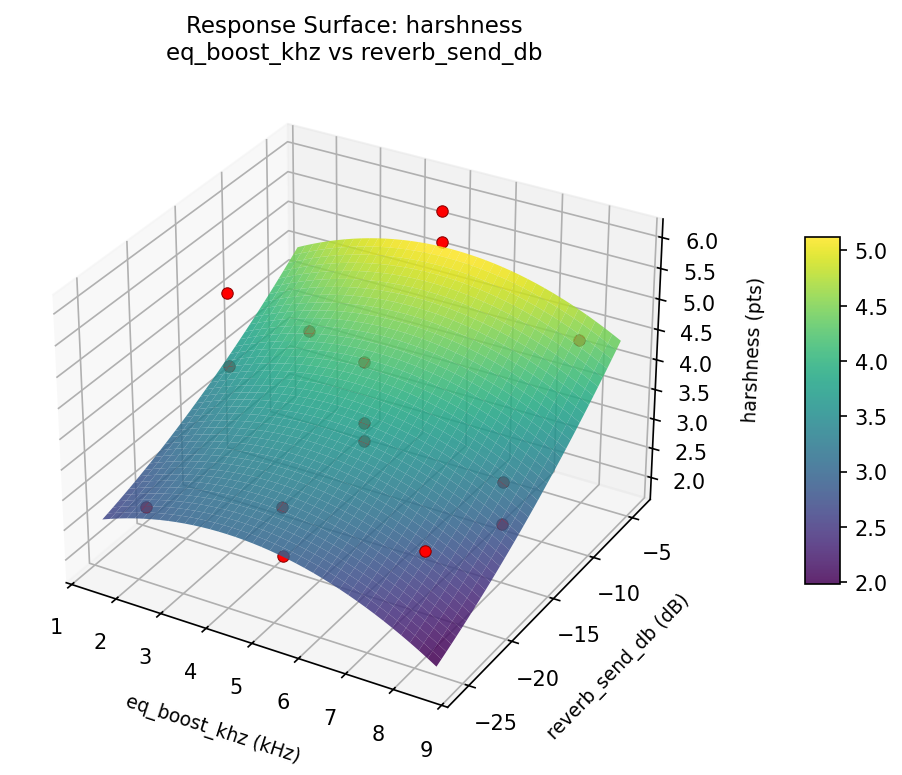
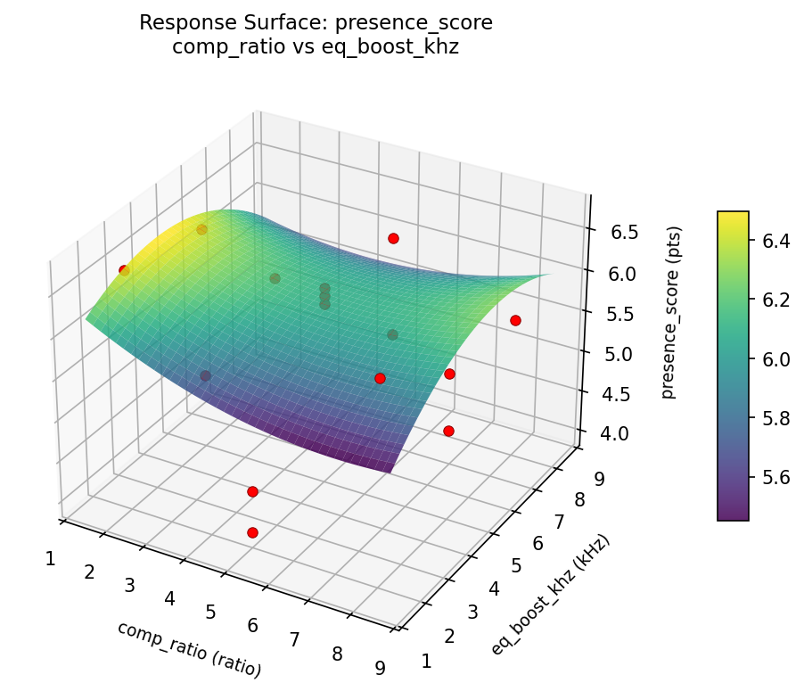
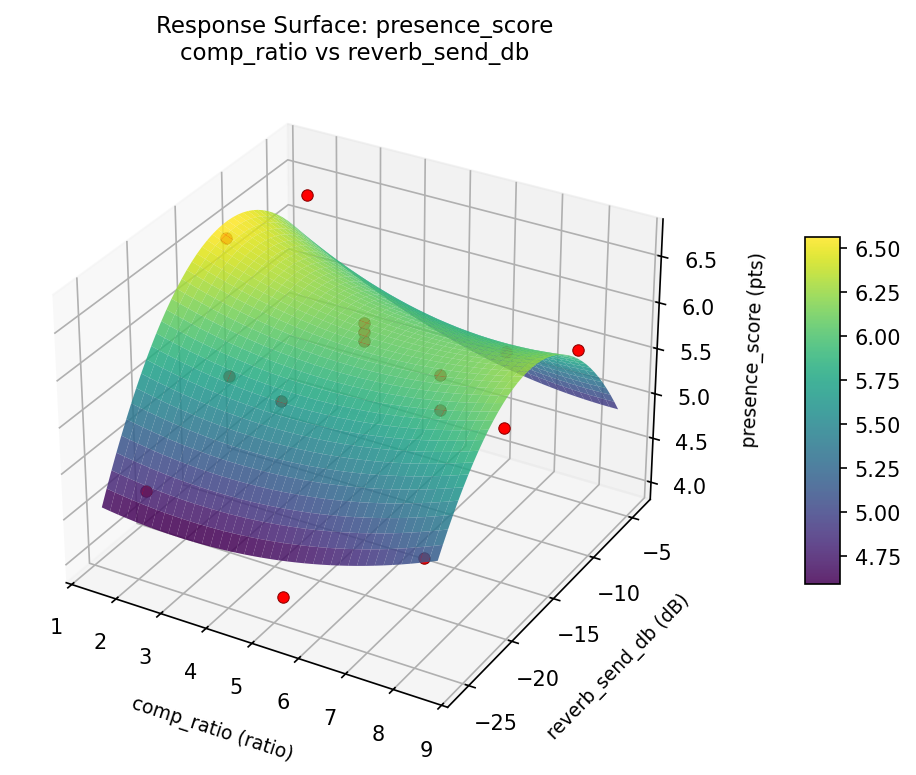
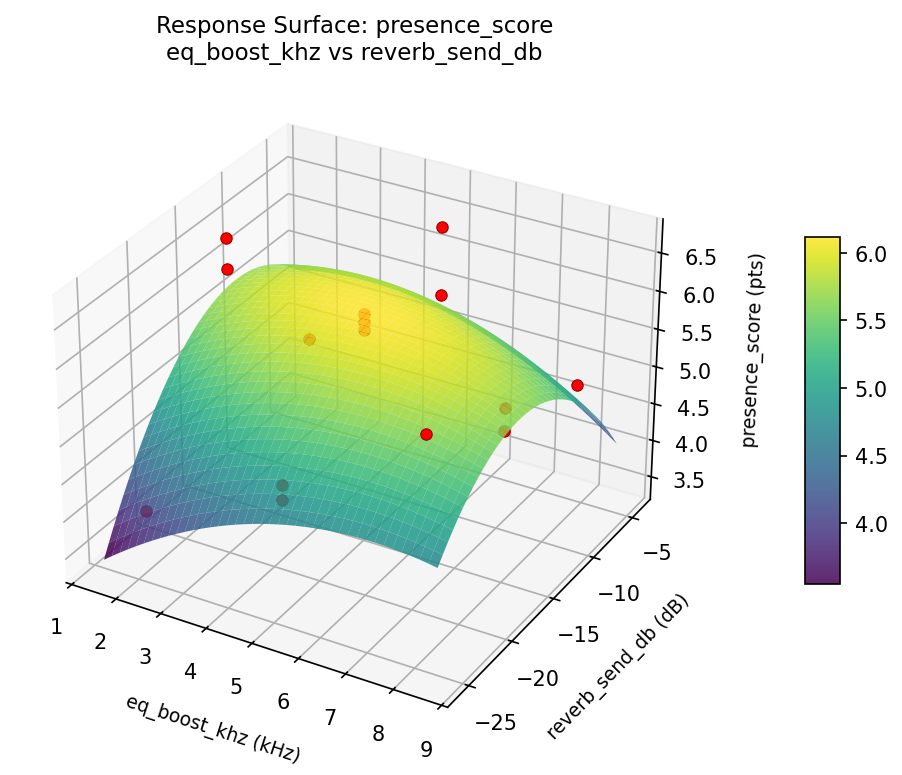

Summary
This experiment investigates vocal mix processing chain. Box-Behnken design to maximize vocal presence and minimize harshness by tuning compression ratio, EQ boost frequency, and reverb send level.
The design varies 3 factors: comp ratio (ratio), ranging from 2 to 8, eq boost khz (kHz), ranging from 2 to 8, and reverb send db (dB), ranging from -24 to -6. The goal is to optimize 2 responses: presence score (pts) (maximize) and harshness (pts) (minimize). Fixed conditions held constant across all runs include mic = sm7b, genre = pop.
A Box-Behnken design was chosen because it efficiently fits quadratic models with 3 continuous factors while avoiding extreme corner combinations — requiring only 15 runs instead of the 8 needed for a full factorial at two levels.
Quadratic response surface models were fitted to capture potential curvature and factor interactions. The RSM contour plots below visualize how pairs of factors jointly affect each response.
Key Findings
For presence score, the most influential factors were reverb send db (60.1%), comp ratio (21.0%), eq boost khz (19.0%). The best observed value was 6.7 (at comp ratio = 5, eq boost khz = 5, reverb send db = -15).
For harshness, the most influential factors were reverb send db (57.0%), eq boost khz (21.7%), comp ratio (21.3%). The best observed value was 2.6 (at comp ratio = 2, eq boost khz = 5, reverb send db = -24).
Recommended Next Steps
- Run confirmation experiments at the predicted optimal settings to validate the model.
- Consider whether any fixed factors should be varied in a future study.
Experimental Setup
Factors
| Factor | Low | High | Unit |
|---|
comp_ratio | 2 | 8 | ratio |
eq_boost_khz | 2 | 8 | kHz |
reverb_send_db | -24 | -6 | dB |
Fixed: mic = sm7b, genre = pop
Responses
| Response | Direction | Unit |
|---|
presence_score | ↑ maximize | pts |
harshness | ↓ minimize | pts |
Configuration
{
"metadata": {
"name": "Vocal Mix Processing Chain",
"description": "Box-Behnken design to maximize vocal presence and minimize harshness by tuning compression ratio, EQ boost frequency, and reverb send level"
},
"factors": [
{
"name": "comp_ratio",
"levels": [
"2",
"8"
],
"type": "continuous",
"unit": "ratio"
},
{
"name": "eq_boost_khz",
"levels": [
"2",
"8"
],
"type": "continuous",
"unit": "kHz"
},
{
"name": "reverb_send_db",
"levels": [
"-24",
"-6"
],
"type": "continuous",
"unit": "dB"
}
],
"fixed_factors": {
"mic": "sm7b",
"genre": "pop"
},
"responses": [
{
"name": "presence_score",
"optimize": "maximize",
"unit": "pts"
},
{
"name": "harshness",
"optimize": "minimize",
"unit": "pts"
}
],
"settings": {
"operation": "box_behnken",
"test_script": "use_cases/166_mixing_vocal_chain/sim.sh"
}
}
Experimental Matrix
The Box-Behnken Design produces 15 runs. Each row is one experiment with specific factor settings.
| Run | comp_ratio | eq_boost_khz | reverb_send_db |
|---|
| 1 | 5 | 2 | -24 |
| 2 | 5 | 5 | -15 |
| 3 | 8 | 5 | -6 |
| 4 | 8 | 5 | -24 |
| 5 | 5 | 5 | -15 |
| 6 | 5 | 5 | -15 |
| 7 | 2 | 5 | -6 |
| 8 | 8 | 2 | -15 |
| 9 | 5 | 2 | -6 |
| 10 | 8 | 8 | -15 |
| 11 | 2 | 5 | -24 |
| 12 | 5 | 8 | -6 |
| 13 | 2 | 2 | -15 |
| 14 | 2 | 8 | -15 |
| 15 | 5 | 8 | -24 |
Step-by-Step Workflow
1
Preview the design
$ python doe.py info --config use_cases/166_mixing_vocal_chain/config.json
2
Generate the runner script
$ python doe.py generate --config use_cases/166_mixing_vocal_chain/config.json \
--output use_cases/166_mixing_vocal_chain/results/run.sh --seed 42
3
Execute the experiments
$ bash use_cases/166_mixing_vocal_chain/results/run.sh
4
Analyze results
$ python doe.py analyze --config use_cases/166_mixing_vocal_chain/config.json
5
Get optimization recommendations
$ python doe.py optimize --config use_cases/166_mixing_vocal_chain/config.json
ℹ
Multi-Objective Optimization
This experiment has conflicting objectives (presence_score (↑), harshness (↓)). Use --multi to find the best compromise using desirability functions:
$ python doe.py optimize --config use_cases/166_mixing_vocal_chain/config.json --multi
6
Generate the HTML report
$ python doe.py report --config use_cases/166_mixing_vocal_chain/config.json \
--output use_cases/166_mixing_vocal_chain/results/report.html
Real-World Experiment Workflow
ℹ
Physical Audio Test? Use the Manual Workflow
Audio and acoustic experiments involve real sound propagation, room acoustics, and hardware. Results require physical measurement or listening evaluation. The simulation script above is for demonstration. For your real experiments, use record, status, and export-worksheet.
$ python doe.py export-worksheet --config use_cases/166_mixing_vocal_chain/config.json \
--format csv --output worksheet.csv
$ python doe.py status --config use_cases/166_mixing_vocal_chain/config.json
$ python doe.py record --config use_cases/166_mixing_vocal_chain/config.json --run 1
$ python doe.py analyze --config use_cases/166_mixing_vocal_chain/config.json --partial
$ python doe.py analyze --config use_cases/166_mixing_vocal_chain/config.json
$ python doe.py optimize --config use_cases/166_mixing_vocal_chain/config.json
$ python doe.py report --config use_cases/166_mixing_vocal_chain/config.json \
--output report.html
✔
Works Without a Test Script
The analysis pipeline doesn't care how results were produced. Record your measurements with record, and the full analysis, optimization, and reporting pipeline works identically. Use --partial to get early insights before all runs are complete.
Features Exercised
| Feature | Value |
|---|
| Design type | box_behnken |
| Factor types | continuous (all 3) |
| Arg style | double-dash |
| Responses | 2 (presence_score ↑, harshness ↓) |
| Total runs | 15 |
Analysis Results
Generated from actual experiment runs using the DOE Helper Tool.
Response: presence_score
Top factors: reverb_send_db (60.1%), comp_ratio (21.0%), eq_boost_khz (19.0%).
Pareto Chart

Main Effects Plot

Response: harshness
Top factors: reverb_send_db (57.0%), eq_boost_khz (21.7%), comp_ratio (21.3%).
Pareto Chart

Main Effects Plot

Response Surface Plots
3D surfaces fitted with quadratic RSM. Red dots are observed data points.
harshness comp ratio vs eq boost khz

harshness comp ratio vs reverb send db

harshness eq boost khz vs reverb send db

presence score comp ratio vs eq boost khz

presence score comp ratio vs reverb send db

presence score eq boost khz vs reverb send db

Full Analysis Output
RSM surface: rsm_presence_score_comp_ratio_vs_eq_boost_khz.png
RSM surface: rsm_presence_score_comp_ratio_vs_reverb_send_db.png
RSM surface: rsm_presence_score_eq_boost_khz_vs_reverb_send_db.png
RSM surface: rsm_harshness_comp_ratio_vs_eq_boost_khz.png
RSM surface: rsm_harshness_comp_ratio_vs_reverb_send_db.png
RSM surface: rsm_harshness_eq_boost_khz_vs_reverb_send_db.png
=== Main Effects: presence_score ===
Factor Effect Std Error % Contribution
--------------------------------------------------------------
reverb_send_db 1.0750 0.2095 60.1%
comp_ratio 0.3750 0.2095 21.0%
eq_boost_khz 0.3393 0.2095 19.0%
=== Summary Statistics: presence_score ===
comp_ratio:
Level N Mean Std Min Max
------------------------------------------------------------
2 4 5.7750 0.9777 4.7000 6.7000
5 7 5.4000 0.9129 4.0000 6.2000
8 4 5.5750 0.5737 4.9000 6.3000
eq_boost_khz:
Level N Mean Std Min Max
------------------------------------------------------------
2 4 5.3750 1.3251 4.0000 6.7000
5 7 5.7143 0.6817 4.7000 6.5000
8 4 5.4250 0.5123 4.9000 6.1000
reverb_send_db:
Level N Mean Std Min Max
------------------------------------------------------------
-15 7 6.0000 0.5033 5.2000 6.7000
-24 4 4.9250 0.8732 4.0000 6.1000
-6 4 5.3750 0.8770 4.5000 6.5000
=== Main Effects: harshness ===
Factor Effect Std Error % Contribution
--------------------------------------------------------------
reverb_send_db 1.8250 0.2727 57.0%
eq_boost_khz 0.6929 0.2727 21.7%
comp_ratio 0.6821 0.2727 21.3%
=== Summary Statistics: harshness ===
comp_ratio:
Level N Mean Std Min Max
------------------------------------------------------------
2 4 3.7750 1.6049 2.6000 6.0000
5 7 3.6429 0.6803 2.7000 4.6000
8 4 4.3250 1.1383 3.3000 5.5000
eq_boost_khz:
Level N Mean Std Min Max
------------------------------------------------------------
2 4 3.7750 1.0112 2.7000 5.1000
5 7 4.1429 1.2541 2.6000 6.0000
8 4 3.4500 0.7853 2.6000 4.5000
reverb_send_db:
Level N Mean Std Min Max
------------------------------------------------------------
-15 7 3.7714 0.8480 2.6000 5.1000
-24 4 3.0250 0.4349 2.6000 3.4000
-6 4 4.8500 1.1504 3.4000 6.0000
Pareto chart (presence_score): use_cases/166_mixing_vocal_chain/results/analysis/pareto_presence_score.png
Pareto chart (harshness): use_cases/166_mixing_vocal_chain/results/analysis/pareto_harshness.png
Main effects (presence_score): use_cases/166_mixing_vocal_chain/results/analysis/main_effects_presence_score.png
Main effects (harshness): use_cases/166_mixing_vocal_chain/results/analysis/main_effects_harshness.png
Optimization Recommendations
=== Optimization: presence_score ===
Direction: maximize
Best observed run: #4
comp_ratio = 5
eq_boost_khz = 5
reverb_send_db = -15
Value: 6.7
RSM Model (linear, R² = 0.1977, Adj R² = -0.0211):
Coefficients:
intercept +5.5467
comp_ratio -0.0625
eq_boost_khz +0.4625
reverb_send_db -0.1000
RSM Model (quadratic, R² = 0.6363, Adj R² = -0.0184):
Coefficients:
intercept +6.1000
comp_ratio -0.0625
eq_boost_khz +0.4625
reverb_send_db -0.1000
comp_ratio*eq_boost_khz +0.4250
comp_ratio*reverb_send_db +0.2500
eq_boost_khz*reverb_send_db -0.2000
comp_ratio^2 +0.1625
eq_boost_khz^2 -0.4375
reverb_send_db^2 -0.7625
Curvature analysis:
reverb_send_db coef=-0.7625 concave (has a maximum)
eq_boost_khz coef=-0.4375 concave (has a maximum)
comp_ratio coef=+0.1625 convex (has a minimum)
Notable interactions:
comp_ratio*eq_boost_khz coef=+0.4250 (synergistic)
Predicted optimum (from quadratic model):
comp_ratio = 8
eq_boost_khz = 8
reverb_send_db = -15
Predicted value: 6.6500
Model quality: Moderate fit — use predictions directionally, not precisely.
Factor importance:
1. eq_boost_khz (effect: 0.9, contribution: 44.5%)
2. reverb_send_db (effect: 0.8, contribution: 40.5%)
3. comp_ratio (effect: 0.3, contribution: 14.9%)
=== Optimization: harshness ===
Direction: minimize
Best observed run: #1
comp_ratio = 2
eq_boost_khz = 5
reverb_send_db = -24
Value: 2.6
RSM Model (linear, R² = 0.1836, Adj R² = -0.0390):
Coefficients:
intercept +3.8600
comp_ratio +0.2875
eq_boost_khz +0.4125
reverb_send_db +0.3250
RSM Model (quadratic, R² = 0.4695, Adj R² = -0.4854):
Coefficients:
intercept +3.9333
comp_ratio +0.2875
eq_boost_khz +0.4125
reverb_send_db +0.3250
comp_ratio*eq_boost_khz +0.8250
comp_ratio*reverb_send_db -0.3000
eq_boost_khz*reverb_send_db +0.4000
comp_ratio^2 +0.2458
eq_boost_khz^2 -0.3542
reverb_send_db^2 -0.0292
Curvature analysis:
eq_boost_khz coef=-0.3542 concave (has a maximum)
comp_ratio coef=+0.2458 convex (has a minimum)
reverb_send_db coef=-0.0292 negligible curvature
Notable interactions:
comp_ratio*eq_boost_khz coef=+0.8250 (synergistic)
eq_boost_khz*reverb_send_db coef=+0.4000 (synergistic)
comp_ratio*reverb_send_db coef=-0.3000 (antagonistic)
Predicted optimum (from linear model):
comp_ratio = 5
eq_boost_khz = 8
reverb_send_db = -6
Predicted value: 4.5975
Model quality: Weak fit — consider adding center points or using a different design.
Factor importance:
1. eq_boost_khz (effect: 0.8, contribution: 40.2%)
2. reverb_send_db (effect: 0.6, contribution: 31.7%)
3. comp_ratio (effect: 0.6, contribution: 28.0%)